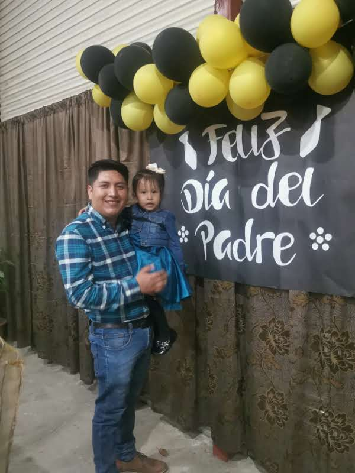

Valores y Creencias:
Guiado por sus creencias, Edvin tiene una fe inquebrantable en Dios. Esta es la brújula moral que orienta sus decisiones y acciones.
Inicio
Antecedetes Familiares
Educacion
Carrera Profesional
Intereses & Pasatiempos
Metas & Aspiraciones
Cualidades Personales